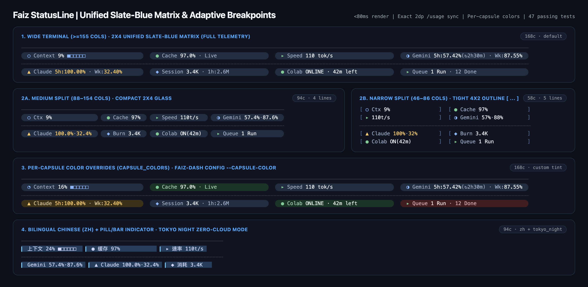
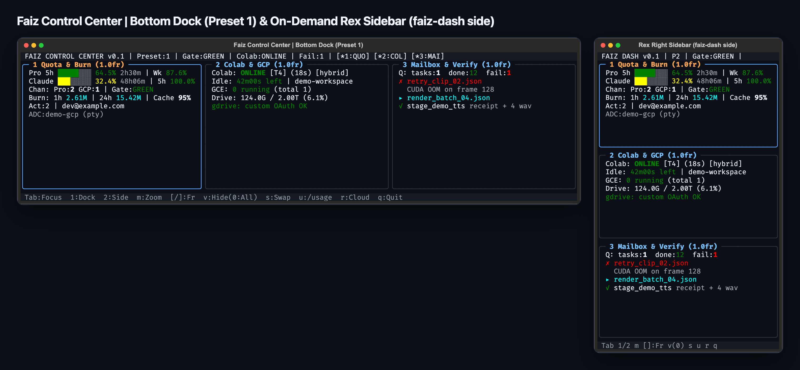
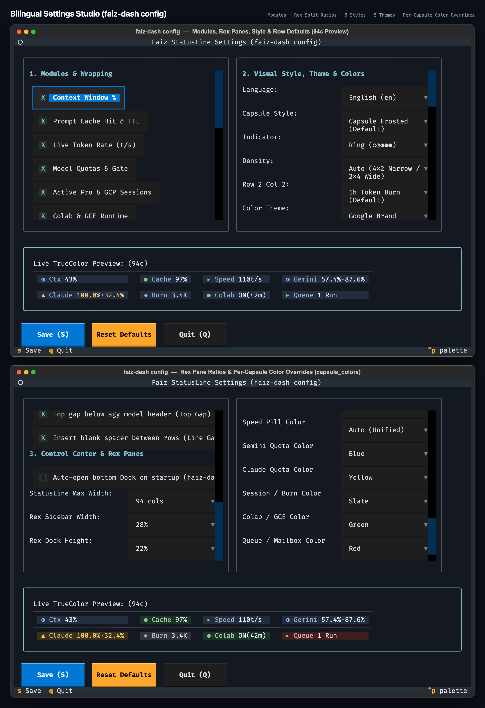

Sub-80ms capsule statusLine with 2-bucket Gemini + Claude parity, activity-aware 20s/180s PTY sync matching /usage to two decimal places, zero-clutter /faiz-dash diagnostic bubbles, and an on-demand Textual TUI.
专为 Antigravity CLI (agy) 打造的极速 (<80ms) TrueColor 状态栏：Gemini + Claude 双组两位小数配额对齐、活跃对话 20s / 空闲 180s 感知刷新、无占屏气泡诊断与按需 Rex 侧边栏。

Pure Bash + jq renders sub-80ms 2-bucket Gemini + Claude telemetry in unified deep slate-blue: wide 2×4 bento spread (>=155c), compact 4-line 2×4 glass (88–154c), tight 5-line 4×2 slate-blue [ ... ] outline (46–86c), plus per-capsule color overrides (capsule_colors) and Apple Terminal 16-color fallback.
Isolated PTY probe guarded by flock uses dynamic Within each group + rfind() tail-frame parsing for fast convergence without TUI repaint tearing across GEMINI MODELS and CLAUDE AND GPT MODELS. Refreshes every 20s during active turns and idles cleanly at 180s.
Run /faiz-dash or faiz-dash inspect for full diagnostics in chat with zero column overhead, or toggle an on-demand 28% Rex right sidebar via faiz-dash side.
Works out of the box with zero cloud config. Decouples the google-colab-cli control plane (active sessions, GPU hardware, compute balance) from the gdrive CLI / rclone Drive data plane (FAIZ_DRIVE_BACKEND=auto|gdrive|rclone), adding GCE Spot tracking, Drive rate-limit backoff, and job verification.

faiz-dash config)
| Command | Purpose |
|---|---|
faiz-dash inspect [--live] [--json] | Print non-interactive diagnostic summary of quotas, 24h burn, cloud backoff, mailbox, and telemetry |
faiz-dash side | Toggle 28% right Textual sidebar inside Rex (--focus=false), with native Terminal fallback hint |
faiz-dash dock | Toggle bottom 3-column Dock inside Rex |
faiz-dash config | Open interactive en/zh settings UI (supports --style, --theme, --row-colors, --capsule-color <id>=<color>, --quota-precision) |
faiz-dash off / on / status | Manage startup auto-dock flag and inspect snapshot cache ages |